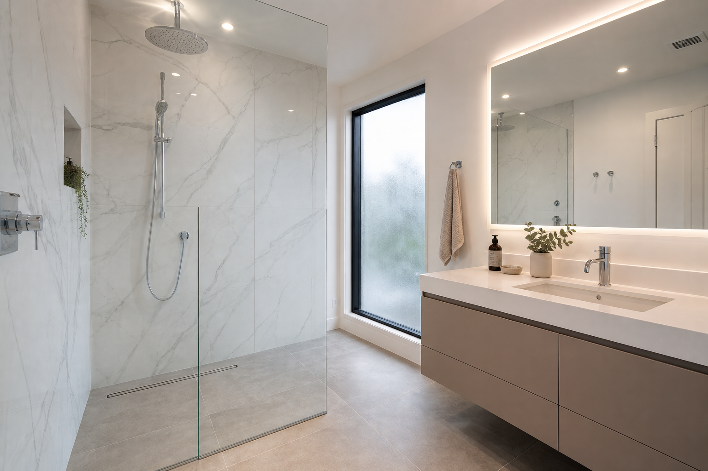

Modern Glass Walk-In Shower Remodel Ideas
A glass walk in shower is one of the most impactful upgrades in contemporary bathroom remodeling because it improves sightlines and showcases tile or panel choices. The best designs pair the enclosure with a cohesive vanity story: quartz countertop thickness, mirror scale, and consistent fixture metals. Glass shower remodel specialists can template enclosures early so tile and glass orders stay aligned.
Frameless glass: what it changes (and what it does not)
Frameless enclosures reduce visual clutter and can make a bathroom feel larger. They do not remove the need for thoughtful slope, drain performance, and realistic splash planning.
Pairing glass with curbless entries
Curbless entries can look stunning behind glass, but the system works best when plumbing and waterproofing are coordinated early. If you want an open entry, confirm your contractor is comfortable with your showerhead package and intended glass height.
Backlit mirrors: planning checklist
Backlighting can elevate a remodel, but it should be planned with mirror dimensions and electrical centers. Ask about color temperature and whether dimming is supported if you want spa-like evenings.
Floating vanity + quartz: composition tips
Thicker quartz profiles can look luxurious, but proportions should match the mirror and wall length. If you choose a taupe or gray vanity, keep countertop contrast crisp so the composition reads clean on camera and in person.
Cleaning routines that keep glass looking premium
Hard water is the enemy of showcase showers. Ventilation, squeegee habits, and appropriate glass treatments (as recommended by your shower installation pro) can keep the remodel looking new longer.
FAQ
Are backlit mirrors worth it?
They can be, if you plan electrical, sizing, and dimming intentionally.
What makes a floating vanity look premium?
Rigid install, neat plumbing, consistent hardware, and balanced proportions with the mirror.